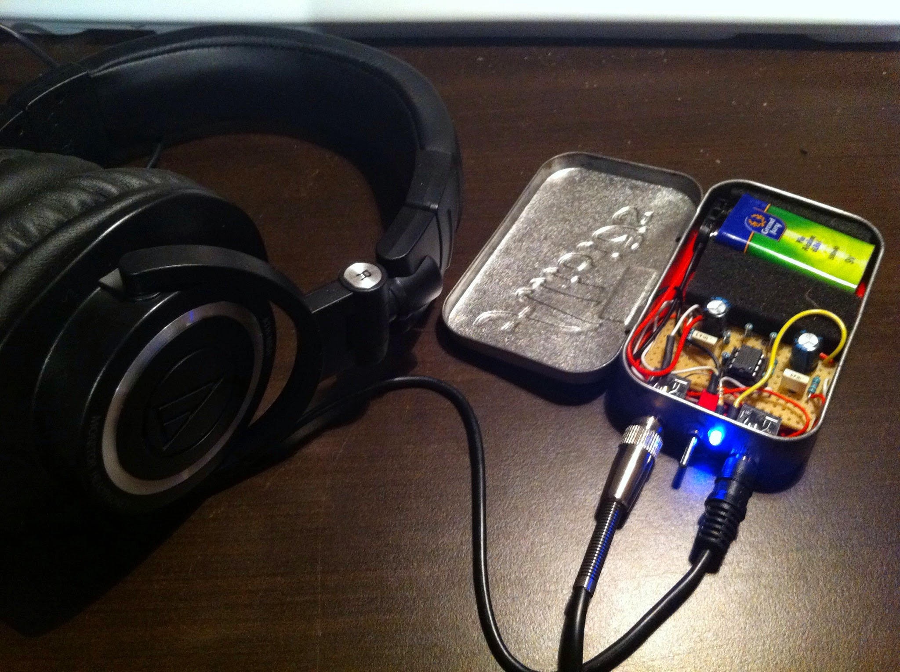
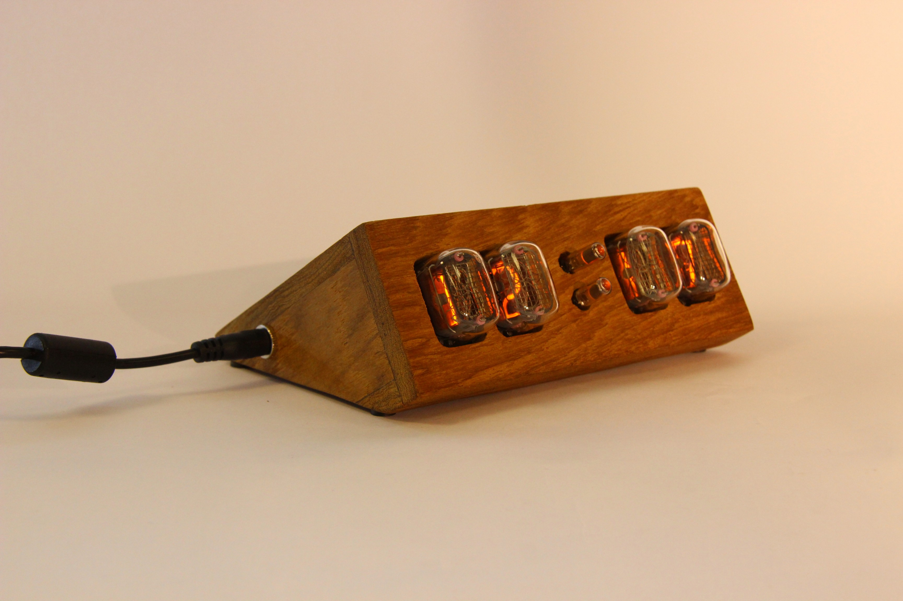
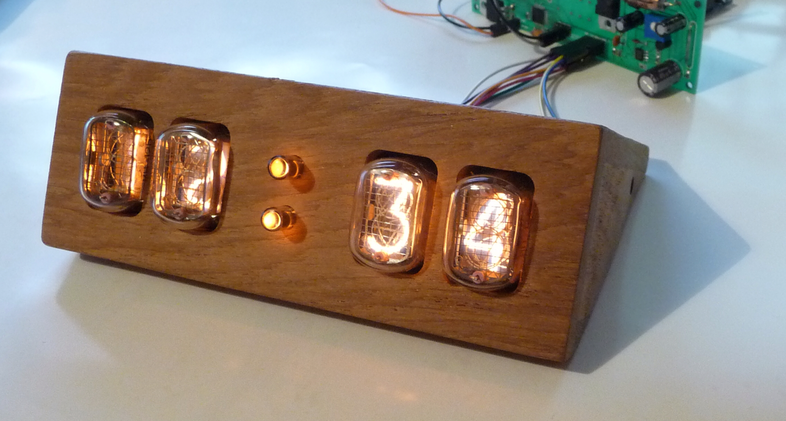
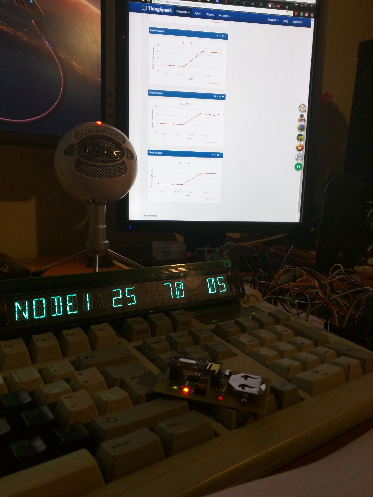

Welcome to my buildlog!
Here you will find the documentation of my projects and various other thing that are of interest to me.
About me
I am a passionate Electronics Engineer with a passion for old technology connected devices. I have however a wide arrea of interest in Technology and Engineering.




Contact
here